Armonia de Cores
Circulo Cromatico
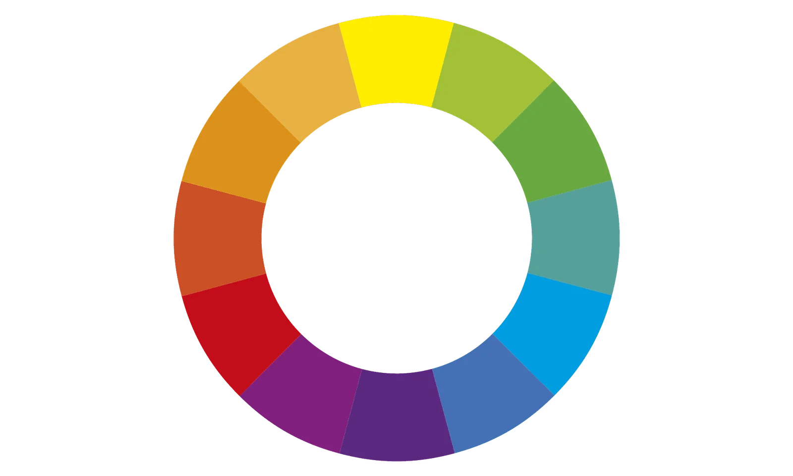seu foco e para Harmonizar as cores, para
entedemos a harmonia das cores
cores primarias:
as cores primarias são Amarelo, Vermelho, Azul, no Circulo cromatico elas estão cimetricas formando um triangulo
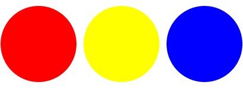cores secundarias:
as cores secundarias são Laranja, violeta, verde.
cores terciarias:
as cores terciarias são Amarelo-Esverdeado, Amarelo-alaranjado, Vermelho-Alaranjado, Vermelho-Arroxeado, Azul-Esverdeado, Azul-Arroxeado
cores complementares:
Cores complementares são pares de cores que se encontram em lados opostos do círculo cromático. Elas criam um forte contraste e um efeito visual vibrante.
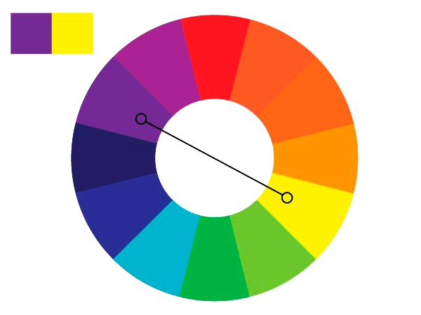cores analogas:
Cores análogas são cores que estão próximas umas das outras no círculo cromático. Elas compartilham uma cor básica e criam uma sensação de harmonia visual.

cores-análogas e complementares
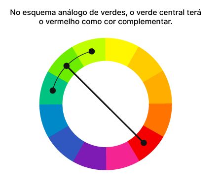cores analogas relacionadas:
cores intercaladas:
Cores intercaladas são cores que se alternam, com espaço entre cada uma. Essa combinação pode criar um bom contraste, mas pode ser mais difícil de harmonizar.
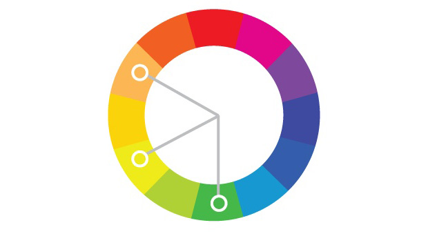cores triadicas:
Cores triádicas são três cores que estão igualmente espaçadas no círculo cromático, formando um triângulo. São uma das harmonizações mais populares porque criam um forte contraste visual, mas mantêm o equilíbrio.
diferente das cores primarias podemos girar o triagulo para qualquer lado podendo fazer outras paletas de cores.
cores quadrado:
Cores em quadrado, também conhecidas como harmonia 90°, são combinações de quatro cores complementares que formam um quadrado no círculo cromático. É um esquema de cores vibrante e equilibrado, que cria bastante contraste.
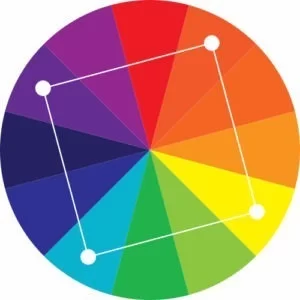cores tetradicas:
Cores tetrádicas são um esquema de cores que combina quatro cores, sendo duas delas complementares. Esse esquema resulta em uma paleta vibrante e rica em contraste.
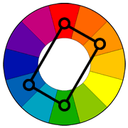monocromia:
Monocromia é um termo que se refere ao uso de uma única cor ou a uma impressão em preto e branco. Pode ser usado em artes, design, impressão e até na visão.
exemplo Vermelho em tres tipos de tons de cores. mas para fundo, com degrader.

Temperatura de Cores:
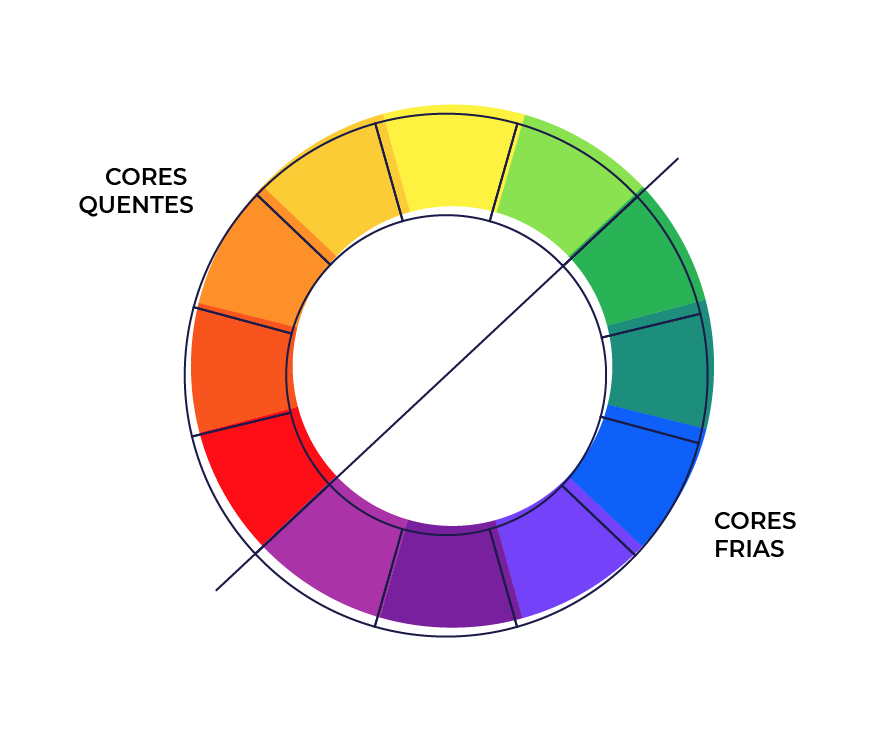3 a 5 cores para o projeto=site app e etc
.jpg) 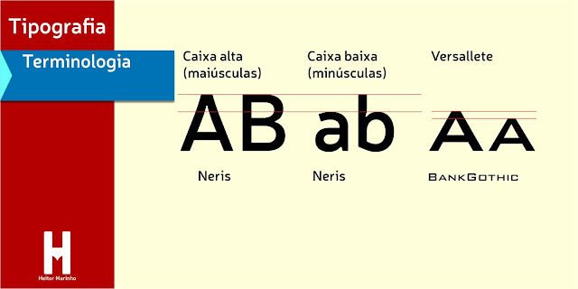
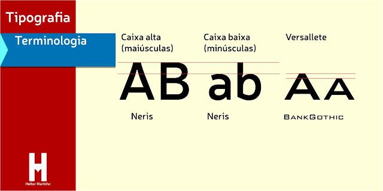
.jpg) 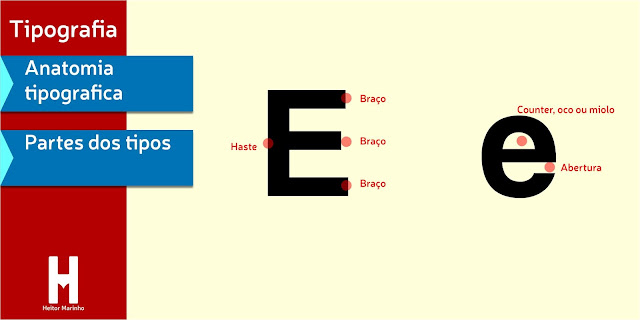
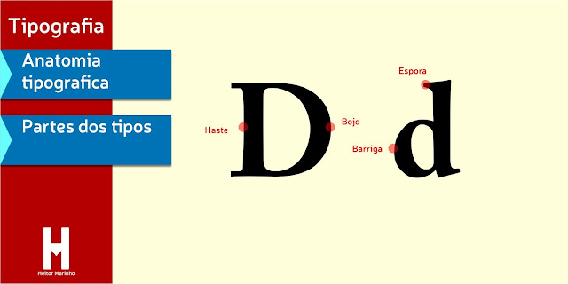
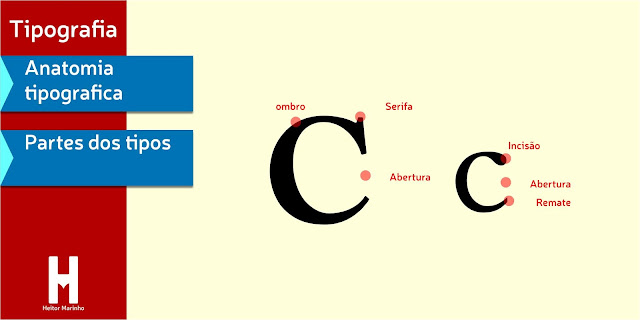
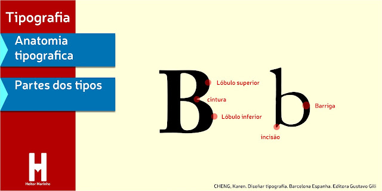
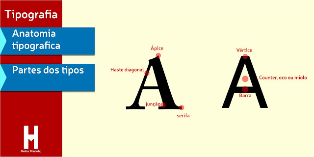
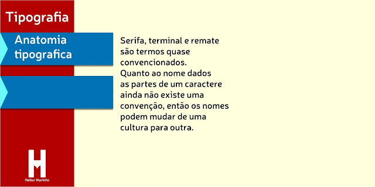
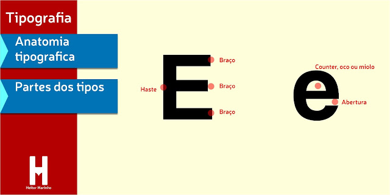
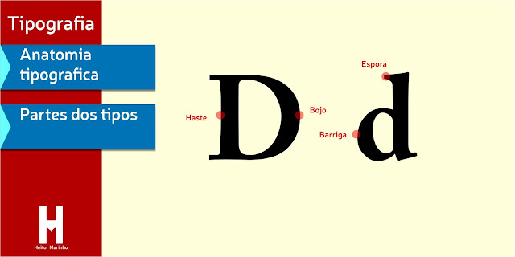
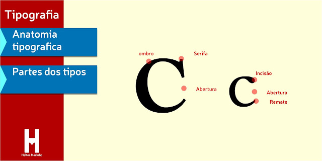
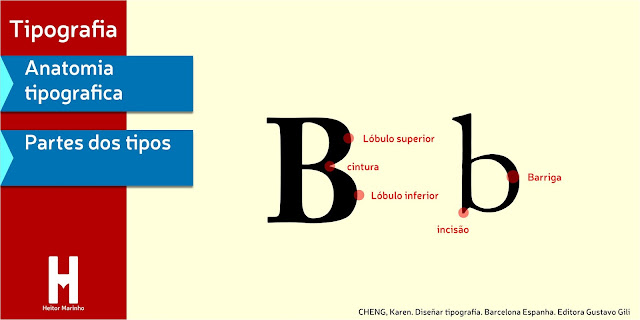
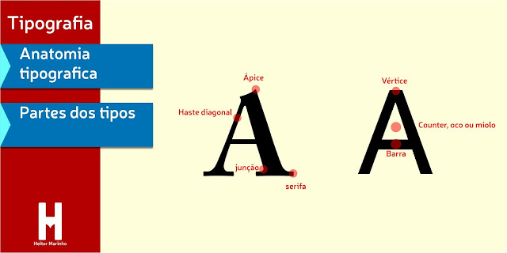
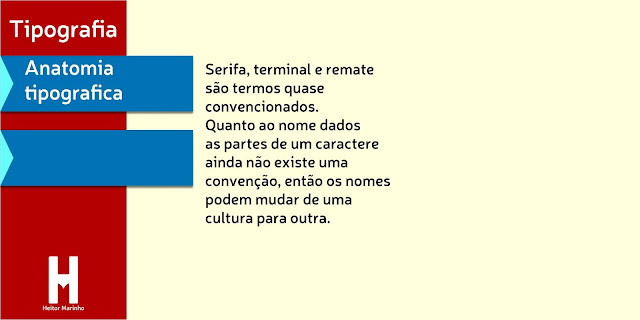